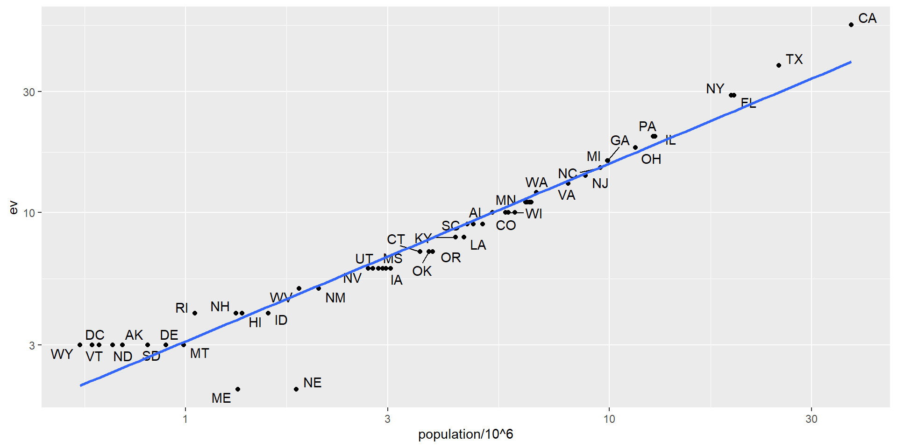

Suppose we want to explore the relationship between population size for US states and electoral votes.
We have the population size in this table:
library(tidyverse) library(dslabs) head(murders)
state abb region population total
1 Alabama AL South 4779736 135
2 Alaska AK West 710231 19
3 Arizona AZ West 6392017 232
4 Arkansas AR South 2915918 93
5 California CA West 37253956 1257
6 Colorado CO West 5029196 65
The join functions are designed to handle this challenge.
The join functions in the dplyr package make sure that the tables are combined so that matching rows are together.
The general idea is that one needs to identify one or more columns that will serve as a key/keys to match the two tables.
Left-Join
tab <-left_join(murders, results_us_election_2016, by ="state") |>select(-others) |>rename(ev = electoral_votes) head(tab)
state abb region population total ev clinton trump johnson
1 Alabama AL South 4779736 135 9 34.35795 62.08309 2.094169
2 Alaska AK West 710231 19 3 36.55087 51.28151 5.877128
3 Arizona AZ West 6392017 232 11 44.58042 48.08314 4.082188
4 Arkansas AR South 2915918 93 6 33.65190 60.57191 2.648769
5 California CA West 37253956 1257 55 61.72640 31.61711 3.374092
6 Colorado CO West 5029196 65 9 48.15651 43.25098 5.183748
stein mcmullin
1 0.4422682 0.0000000
2 1.8000176 0.0000000
3 1.3185997 0.6699155
4 0.8378174 1.1653206
5 1.9649200 0.2792070
6 1.3825031 1.0400874
Plot using the joined table

Join methods
.
Note: These names are based on SQL.
Example: create two tables
tab_1 <-slice(murders, 1:6) |>select(state, population) # slice() select rows by row numbers: here select the first 6 rowstab_1
state population
1 Alabama 4779736
2 Alaska 710231
3 Arizona 6392017
4 Arkansas 2915918
5 California 37253956
6 Colorado 5029196
state ev
1 California 55
2 Arizona 11
3 Alabama 9
4 Connecticut 7
5 Alaska 3
6 Delaware 3
Left join example
Suppose we want a table like tab_1, but adding electoral votes to whatever states we have
we use left_join with tab_1 as the first argument.
specify which column to use to match with the by argument.
left_join(tab_1, tab_2, by ="state")
state population ev
1 Alabama 4779736 9
2 Alaska 710231 3
3 Arizona 6392017 11
4 Arkansas 2915918 NA
5 California 37253956 55
6 Colorado 5029196 NA
Note that NAs are added to the two states not appearing in tab_2.
Left join by pipe
notice that this function, as well as all the other joins, can receive the first arguments through the pipe:
tab_1 |>left_join(tab_2, by ="state") tab_1
Right join example
If instead of a table with the same rows as first table, we want one with the same rows as second table, we can use right_join:
tab_1 |>right_join(tab_2, by ="state")
state population ev
1 Alabama 4779736 9
2 Alaska 710231 3
3 Arizona 6392017 11
4 California 37253956 55
5 Connecticut NA 7
6 Delaware NA 3
Now the NAs are in the column coming from tab_1.
Inner join
If we want to keep only the rows that have information in both tables, we use inner_join.
You can think of this as an intersection:
inner_join(tab_1, tab_2, by ="state")
state population ev
1 Alabama 4779736 9
2 Alaska 710231 3
3 Arizona 6392017 11
4 California 37253956 55
No NA anynore
Full join
If we want to keep all the rows of both tables and fill the missing parts with NAs, we can use full_join.
You can think of this as a union:
full_join(tab_1, tab_2, by ="state")
state population ev
1 Alabama 4779736 9
2 Alaska 710231 3
3 Arizona 6392017 11
4 Arkansas 2915918 NA
5 California 37253956 55
6 Colorado 5029196 NA
7 Connecticut NA 7
8 Delaware NA 3
Semi join
The semi_join function lets us keep the part of first table for which we have information in the second.
It does not add the columns of the second:
semi_join(tab_1, tab_2, by ="state")
state population
1 Alabama 4779736
2 Alaska 710231
3 Arizona 6392017
4 California 37253956
Anti join
The function anti_join is the opposite of semi_join.
It keeps the elements of the first table for which there is no information in the second:
anti_join(tab_1, tab_2, by ="state")
state population
1 Arkansas 2915918
2 Colorado 5029196
Binding
Unlike the join function, the binding functions do not try to match by a variable, but instead simply combine datasets either horizontally or vertically.
If the datasets don’t match by the appropriate dimensions, one obtains an error.
Binding columns
The dplyr function bind_cols binds two objects by making them columns in a tibble.
bind_cols(a =1:3, b =4:6)
# A tibble: 3 × 2
a b
<int> <int>
1 1 4
2 2 5
3 3 6
This function requires that we assign names to the columns. Here we chose a and b.
there is an R-base function cbind with similar functionality.
cbind and bind_cols
An important difference is that cbind can create matrix/df, while bind_cols always produces a data frame.
x <-1:3y <-c(10, 20, 30)cbind(x, y) #output a matrix
x y
[1,] 1 10
[2,] 2 20
[3,] 3 30
A <-matrix(1:6, nrow =3) #Note the cols of Az <-c(100, 200, 300)cbind(A, z) # add a col to A
z
[1,] 1 4 100
[2,] 2 5 200
[3,] 3 6 300
Binding two dfs
For example, here we break up the tab data frame and then bind them back together:
state abb region population total ev clinton trump
1 Alabama AL South 4779736 135 9 34.35795 62.08309
2 Alaska AK West 710231 19 3 36.55087 51.28151
3 Arizona AZ West 6392017 232 11 44.58042 48.08314
4 Arkansas AR South 2915918 93 6 33.65190 60.57191
5 California CA West 37253956 1257 55 61.72640 31.61711
6 Colorado CO West 5029196 65 9 48.15651 43.25098
Binding by rows
The bind_rows function is similar to bind_cols, but binds rows instead of columns:
state abb region population total ev clinton trump johnson stein
1 Alabama AL South 4779736 135 9 34.35795 62.08309 2.094169 0.4422682
2 Alaska AK West 710231 19 3 36.55087 51.28151 5.877128 1.8000176
3 Arizona AZ West 6392017 232 11 44.58042 48.08314 4.082188 1.3185997
4 Arkansas AR South 2915918 93 6 33.65190 60.57191 2.648769 0.8378174
mcmullin
1 0.0000000
2 0.0000000
3 0.6699155
4 1.1653206
similar R-base function rbind.
Set operators
Another set of commands useful for combining datasets are the set operators.
When applied to vectors, these behave as their names suggest.
Examples are intersect, union, setdiff, and setequal.
However, if the tidyverse, or more specifically dplyr, is loaded, these functions can be used on data frames.
R-base Intersect
on vectors of any type, such as numeric:
intersect(1:10, 6:15)
[1] 6 7 8 9 10
or characters:
intersect(c("a","b","c"), c("b","c","d"))
[1] "b" "c"
dyplyr Intersect
applied to tables with the same column names.
returns the rows in common between two tables (common records)
To make sure we use the dplyr version of intersect rather than the base R version, use dplyr::intersect like this:
state abb region population total ev clinton trump johnson
1 Arizona AZ West 6392017 232 11 44.58042 48.08314 4.082188
2 Arkansas AR South 2915918 93 6 33.65190 60.57191 2.648769
3 California CA West 37253956 1257 55 61.72640 31.61711 3.374092
stein mcmullin
1 1.3185997 0.6699155
2 0.8378174 1.1653206
3 1.9649200 0.2792070
R-base Union
Similarly union takes the union of vectors.
union(1:10, 6:15)
[1] 1 2 3 4 5 6 7 8 9 10 11 12 13 14 15
union(c("a","b","c"), c("b","c","d"))
[1] "a" "b" "c" "d"
dyplyr Union
combines all the rows of two tables with the same column names (combine records).
state abb region population total ev clinton trump johnson stein
1 Alabama AL South 4779736 135 9 34.35795 62.08309 2.094169 0.4422682
2 Alaska AK West 710231 19 3 36.55087 51.28151 5.877128 1.8000176
mcmullin
1 0
2 0
R-base setequal
tells us if two sets are the same, regardless of order.
setequal(1:5, 1:6)
[1] FALSE
but:
setequal(1:5, 5:1)
[1] TRUE
dyplyr setequal
checks whether data frames are equal, regardless of order of rows or columns:
dplyr::setequal(tab_1, tab_2)
[1] FALSE
Joining with data.table
In tidyverse we joined two tables with left_join:
tab <-left_join(murders, results_us_election_2016, by ="state")
In data.table the merge functions works similarly:
library(data.table) tab <-merge(murders, results_us_election_2016, by ="state", all.x =TRUE)
Instead of defining different functions for the different type of joins, merge uses the the logical arguments all (full join), all.x (left join), and all.y (right join).
 .
.